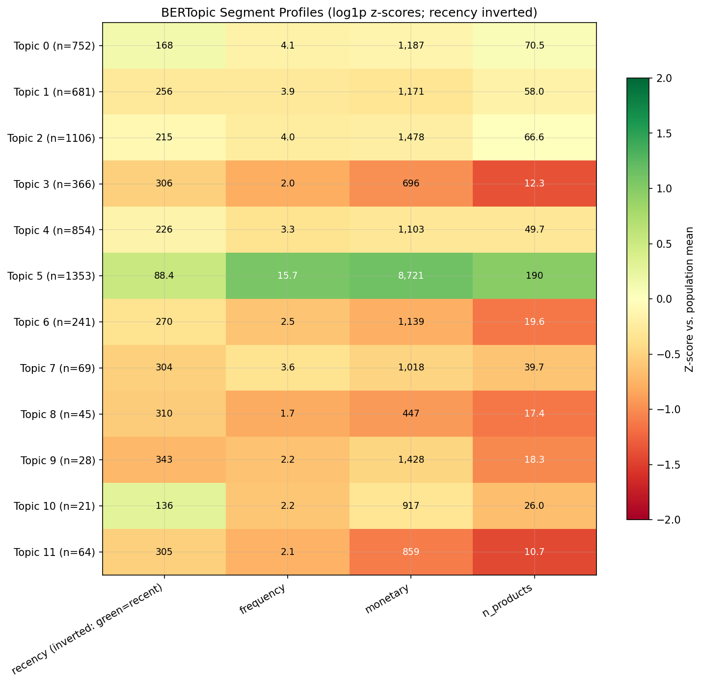

4.1 客户细分
关于中文版
本页是英文版 Marketing Science in Python 的AI翻译。英文版为正式版本，如有出入，以英文版为准。代码、Notebook 和图片中的文字保持英文。 阅读英文版
一个客户细分项目应该产出你的团队真正能用的东西，而不只是一份演示文稿。真正的交付物是一个可以直接接入你的 CRM 和广告平台的 segment_id，外加每个细分群体的一份简明简报：他们是谁、为什么重要，以及你的团队应该采取什么行动。
本章分三步讲解如何构建这样的成果：
- 首先，按当前价值给客户排序。十分位分析和 RFM（最近购买时间 Recency、购买频率 Frequency、消费金额 Monetary）提供了一种按价值快速细分的方法。
- 其次，按行为给客户分组。行为聚类能发现仅靠价值层级无法捕捉的模式。
- 最后，加入购买的含义。基于嵌入向量的细分展示客户实际购买的是什么，而不只是花了多少钱。
行为变量与画像变量
构建客户细分时，变量大致分为两类。行为变量描述客户做了什么：最近购买时间、购买频率、消费金额、购买过的品类、产品广度、退货以及对折扣的依赖程度。画像变量描述他们是谁，或者你能在哪里触达他们：年龄、收入、家庭构成、地理位置、会员等级和渠道偏好。
对营销细分而言，行为变量是更牢靠的基础。一个人浏览过什么、买过什么，或者相似客户选择了什么，通常比人口统计特征更能预测其下一步行动。仅依赖人口统计特征，比如“这款产品卖给 30 多岁的男性”或“这个优惠给高收入人群”，其信号远弱于客户真实的购买历史。
画像变量仍然有其作用。在构建好细分群体之后使用它们，来理解每个群体里都是谁、在哪里触达他们，以及如何调整沟通方式。
从简单开始：十分位与 RFM
最简单的方法是基于规则的：由你来定义切分点，而不是依赖算法。十分位分析和 RFM 是最常见的例子。
十分位分析
十分位分析按营收把客户切成十个人数相等的组。其分布往往符合帕累托法则：一小群客户贡献了大部分营收。最高的十分位获得留存和 VIP 待遇。接下来的三个十分位是增长型营销活动的主要目标。中间三个十分位接受低成本的自动化培育，最低的三个则被排除在高成本优惠之外。你可以很快搭建起这套方案，并给团队一份清晰的行动计划。

RFM 分析
RFM 提供了更细致的视角。它是直复营销中使用最广泛的细分框架，因为团队本来就习惯用这些术语思考：已休眠的高消费客户、新的高频买家，以及类似的模式。
| 变量 | 定义 | 理想方向 |
|---|---|---|
| 最近购买时间（R） | 距客户上次购买的天数 | 越低越好 |
| 购买频率（F） | 观察期内的购买次数 | 越高越好 |
| 消费金额（M） | 观察期内的总消费 | 越高越好 |
独立排序法把每个变量分别切成五分位，生成一个三位数的得分（R=5，F=4，M=3），最多可得 125 个组。顺序排序法则把切分嵌套起来：先按最近购买时间切分，再在每个最近购买时间组内按购买频率切分，最后按消费金额切分，因此最近购买时间的权重最大。
PyMC-Marketing 是第 4.2 节中用于 CLV 建模的库，它自带一个基于四分位的 rfm_segments() 工具，可以直接从交易表中为 R、F、M 打分并分配带名称的细分群体。它不如 K-Means 灵活，但在实践中表现良好，而且在非常大的客户群上依然很快。
十分位和 RFM 搭建快、用起来容易。但它们只能建立价值层级，而不是完整的客户画像。两个 RFM 得分相近的客户，行为可能大相径庭：一个可能跨许多品类购买全价商品，另一个可能只在单一品类里买打折商品。要看清这些差异，你需要从价值层级走向更丰富的行为变量。
使用 K-Means 进行行为聚类
K-Means 是一种经典的聚类算法，在营销细分中依然好用。用 StandardScaler 对特征做标准化，以免消费金额主导一切，并从 6 到 10 个行为变量开始。除了 RFM 之外，有用的补充包括平均订单金额、购物篮大小和退货率。
在缩放之前先对偏态变量做对数变换。消费金额、购买频率、最近购买时间和购物篮大小通常都严重右偏：少数客户的购买量远超其他所有人。StandardScaler 只做中心化和重新缩放，所以这些长尾会保留下来。如果直接喂入原始值，K-Means 会把最初几次切分花在区分高消费者和低消费者上，基本上只是重新发现了价值层级，而它额外找到的任何一个簇都只是一小撮离群点，小到无法据此行动。对偏态特征应用 log1p（一条简单规则：凡是偏度大于约 1 的都做变换）能压缩长尾，这样簇反映的是行为的形态而非消费规模，均衡且可行动的细分群体就会浮现出来。在配套数据集上，这正是 K-Means 坍缩成三个价值层级，与把客户群拆成五个均衡、规模相当的行为群体之间的区别。
选择 K 一半靠统计，一半靠判断。肘部法则有助于缩小范围，但很少能确定具体数字。在客户数据上，最明显的拐点往往出现在 K=3，而这通常只是重新找回了十分位和 RFM 已经捕捉到的价值层级（重度、一般、休眠）。要按行为而不是按价值细分，就要推进到实用的范围（通常是 4 到 8 个细分群体），并让可行动性来决定：保留那个其细分群体你的营销团队真的会区别对待的 K。如果他们无法为每个细分群体描述一种不同的行动，说明你的细分群体太多了。

在配套数据集上，K=5 是细分群体不再只是价值层级、开始成为简报的地方。表 2 就是这次拟合的结果。占比和画像均值来自 notebook（消费、到店次数和部门数是两年总计在细分群体内的平均值）；名称和最后两项行动则是分析师对其画像热力图的解读，这一步 notebook 留给了你。
| 细分群体 | 占比 | 画像 | 行动 |
|---|---|---|---|
| 重度忠诚客户 | 25% | 消费 $7,300，到店 209 次，17 个部门 | VIP 留存 |
| 高频小篮客户 | 23% | 消费 $3,228，到店 157 次，订单 $24 | 做大购物篮 |
| 偶发大篮客户 | 22% | 消费 $1,938，到店 56 次，订单 $38 | 低成本培育 |
| 折扣倾向客户 | 19% | 消费 $1,087，折扣占比 19%，品类范围窄 | 仅在有利润率护栏时提供优惠 |
| 休眠客户 | 11% | 消费 $334，上次购买在 17 周前 | 做一次低成本再激活，然后停止 |
名称只是速记；简报是整行。这就是要交给营销团队做下文可行动性检查的表：如果两行会收到同一个营销活动，就把它们合并。
数值聚类依然会抹平产品的含义。以购买频率、消费金额、最近购买时间、品类广度和折扣依赖度作为输入，两个客户即使购买的产品截然不同，看起来也可能很相似。要捕捉这种含义，就把产品文本直接带进细分。
使用 BERTopic 的基于嵌入向量的细分
要捕捉客户实际购买的是什么，把每位客户的购买历史当作文本来处理：把他们购买过的产品描述拼接成一个字符串（客户文档），然后用嵌入模型把这个字符串转换成一个稠密向量。在这个嵌入空间里，生日蜡烛和派对餐盘靠得很近，而一把古董茶壶则离得很远，因此对向量做聚类会按购买含义而不只是购买量来划分客户。
这些示例使用 UCI Online Retail II 数据集，它包含一家英国礼品零售商约一百万条交易，其自由文本的产品描述正是嵌入模型要读取的内容。我们用 BERTopic 运行整条流水线。

为什么选 BERTopic？
手工完成这条流水线意味着串联四个库：用 SentenceTransformers 嵌入文档，用 UMAP 降维，用 HDBSCAN 聚类，再用自定义代码解读结果。BERTopic 把这四者封装在一个 API 之后，并加入了让输出可用的部分：用 c-TF-IDF 提取每个细分群体的区分性关键词，用 reduce_outliers() 处理 HDBSCAN 未分配的客户，用 transform() 为新客户打分而无需重新拟合，以及一个可选的用 LLM 命名的步骤。本节余下部分就沿着这条流水线展开。
构建客户文档
例如，一位客户的文档可能长这样：
red retrospot cake stand, party bunting, paper cups, birthday candles, cake cases
数值模型可能只把这位客户看作高频或高消费。嵌入模型看到的是产品含义：派对用品和与庆祝相关的购买。
构建客户文档就是对交易日志做一次分组加拼接：
# Keep each customer's top-N products by revenue, then join the descriptions
prod_rev = (
df.groupby(["CustomerID", "Description"])["Revenue"].sum()
.reset_index()
.sort_values(["CustomerID", "Revenue"], ascending=[True, False])
)
top_products = prod_rev.groupby("CustomerID").head(TOP_N)
customer_docs = (
top_products.groupby("CustomerID")["Description"]
.apply(lambda d: ", ".join(d))
.reset_index(name="doc")
)三个实际决策对细分群体质量的影响超过其他一切。
哪些产品放进去。按购买频率或营收取前 N 个商品，通常比完整购买历史效果更好。完整列表会带来一次性购买的噪声；头部商品捕捉的是客户的真实模式。
是否按营收加权。高价商品出现一次与低价商品出现一次，可能会错误反映客户真正在意什么。按营收加权（按消费比例重复提及产品）能让购物篮混杂的客户的细分群体更清晰。当产品间价格差异很大时，给权重设上限或使用对数消费加权；否则一次奢侈品购买就可能主导整个文档。
过滤通用产品。像“礼品卡”、“邮费”这类商品或通用 SKU 都是噪声：它们出现在所有细分群体中，稀释了关键词。通过 StockCode 的模式把它们过滤掉，或维护一个小型排除清单。仅这一步，往往就决定了细分群体是有意义还是毫无意义。
对大多数零售目录来说，一个轻量的句子嵌入模型就够了。细分群体的质量更多取决于你如何设计和验证客户文档，而不是选哪个嵌入模型。该 notebook 出于可复现性使用本地的 SentenceTransformers 模型，但同样的工作流也可以使用基于 API 的嵌入模型，例如 OpenAI 的嵌入。
解读输出
那张图背后的拟合只需一次调用。本地嵌入模型把每个文档转换成向量，BERTopic 负责聚类和关键词提取：
from bertopic import BERTopic
from sentence_transformers import SentenceTransformer
embedding_model = SentenceTransformer("all-MiniLM-L6-v2") # local, lightweight
embeddings = embedding_model.encode(customer_docs["doc"].tolist())
topic_model = BERTopic(embedding_model=embedding_model)
topics, probs = topic_model.fit_transform(
customer_docs["doc"].tolist(), embeddings=embeddings
)配套 Notebook 显式配置了 UMAP、HDBSCAN 和 c-TF-IDF 子模型；这里是同一条流水线使用默认参数的版本。回报是每个细分群体的一份关键词指纹：

把这些面板交给营销人员，他们应该能很快看出哪些品类、营销活动和创意适合每个群体。
当一个主题占据主导
真实的产品目录常常有一个覆盖大多数客户的宽泛主题，边缘则是一串界限分明的小众主题。HDBSCAN 两者都能发现，但在离群点归并之后，宽泛主题会膨胀成一个单一的巨型主题，大到无法作为一个细分群体来行动。修复方法是外科手术式的：只对巨型主题的嵌入向量运行 K-Means，把它拆成适合投放规模的子细分群体，同时把小众主题保留为探索发现。这是把“HDBSCAN 用于发现，K-Means 用于运营”的模式应用在主导簇的内部，而不是整个客户群上。当任一主题超过客户群的 50% 时，配套 Notebook 会自动执行这一步。
LLM 命名陷阱
LLM 辅助命名会让细分群体显得比实际更可信。把任何一个簇，哪怕是随机的簇，喂给 LLM 并要求它给出名称和人物画像，你都会得到一段精致而有说服力的描述。无论这个簇有没有意义，叙事听起来都很合理。
两道防线：
- 在阅读 LLM 的叙事之前先验证关键词证据。如果你自己在头部关键词里看不出清晰的主题，那 LLM 给的名称就是虚构。
- 拿名称去营销团队那里检验。如果他们会为两个名称不同的细分群体写出同一份营销活动简报，那这些名称只是装饰，并无信息量。
配套 Notebook：完整可运行的代码分在两个 notebook 里，各自使用适合其方法的数据集。
sec4.1_traditional_segmentation.ipynb：在 Dunnhumby 的“The Complete Journey”数据集上运行十分位、RFM 和 K-Means，这也是 CLV 那一章使用的数据集，因此细分群体归属可以延续下去。在 GitHub 上查看sec4.1_semantic_segmentation.ipynb：在 UCI Online Retail II 数据集上运行嵌入流水线（客户文档构建、通用产品过滤、嵌入、BERTopic 聚类、关键词提取和 LLM 辅助命名），该数据集拥有这一方法所需的丰富产品描述。其可选的 LLM 命名步骤目前配置为使用 Anthropic，需要litellm包和一个ANTHROPIC_API_KEY；没有它时该单元会跳过，其余部分照常运行。在 GitHub 上查看
你的细分够好吗？
三项检查，按优先级排列。
可行动性最重要。把细分群体画像展示给你的营销团队。对每一对细分群体问：“你会使用不同的信息、渠道、优惠或频率吗？”如果回答是“我对两者会做同样的事”，那么无论数学上看起来多么干净，这套细分都不可行动。常见的元凶是一个在所有方面都很平均的细分群体；把它与相邻群体合并，或重新审视你的变量选择。
稳定性。在两个不重叠的时间段上重新运行聚类，检查客户是否大多落在相同的细分群体中。调整兰德指数（ARI）为此给出了一个数字；如果两个时间段之间换组的客户太多，你就不能依赖它们来做营销活动。配套 Notebook 展示了这两项检查：语义 notebook 中的 ARI 计算，以及传统 notebook 中的迁移矩阵视图。
在食品杂货数据上，迁移矩阵是按每年的营收五分位给客户排名，而不是重新聚类：最高五分位中有 70%、最低五分位中有 61% 的客户从一年到下一年保持不变，而中间三个五分位只有约 40% 保持不变。客户群的中部是细分归属最不可靠的地方，因此基于这些归属构建的营销活动在那里需要留出最多的余地。

规模。每个细分群体都应大到足以据此行动，但合适的下限取决于业务和营销活动：不存在通用的底线。作为粗略的指引，避免小到无法对其开展有意义营销活动的细分群体；对于宽泛的定向，这通常意味着客户群的 10% 左右，而一个真正高价值的小众群体可以是有意为之的例外。在实践中，少数几个细分群体，通常是 4 到 8 个，就足够了。
细分群体建立在行为差异之上，但分配给这些细分群体的营销活动仍然需要测试。在宣布胜利之前，请回看 A/B 测试设计。
方法速查表
| 问题 | 方法 | 输入 | 输出 |
|---|---|---|---|
| 哪些客户现在值得更多关注？ | 十分位 / RFM | 交易日志 | 价值层级或 R/F/M 得分 |
| 价值层级之外还存在哪些行为模式？ | K-Means | 数值型行为特征 | 行为细分群体标签 |
| 客户实际购买的是什么？ | 基于嵌入向量的聚类 | 由产品描述构成的客户文档 | 带关键词指纹的基于含义的细分群体 |
要点
- 从行为出发构建细分群体，之后再引入人口统计特征来描述和触达每个群体。交付物是你的 CRM 和广告平台能用的
segment_id，而不是一份幻灯片。 - 先验证可行动性，再验证稳定性和规模。如果两个细分群体会收到同一个营销活动，就把它们合并。
- 一个有说服力的细分群体名称不是证据。LLM 会为任何簇生成一个名称，包括随机的簇，所以在信任标签之前先自己读一读头部关键词。